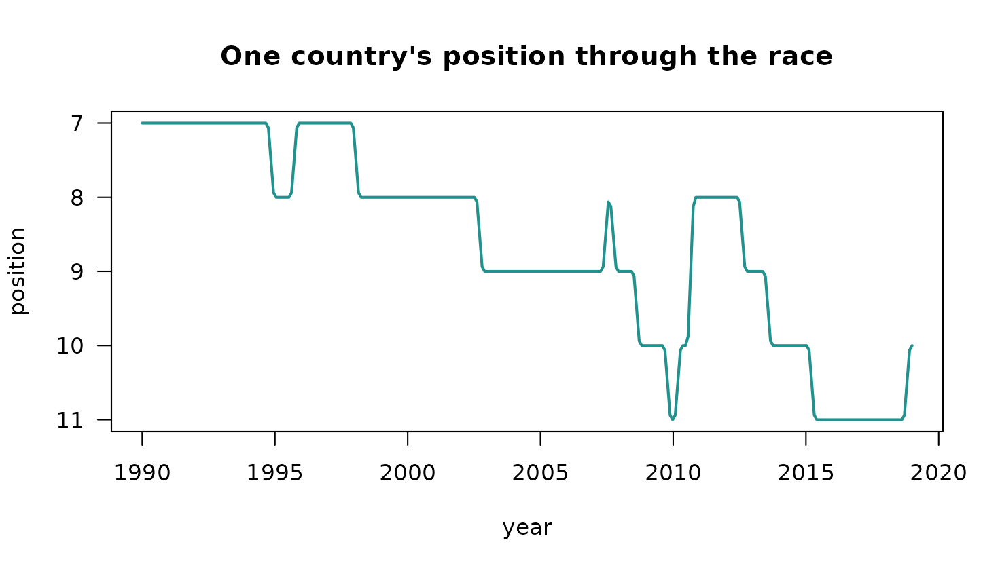

Most of the difference between an animation that reads well and one
that does not comes down to three decisions: what is interpolated, what
is not, and whether the geometry holds still. This vignette sets out the
choices ggrace() makes, since they are the parts worth
arguing with.
Values move at a constant rate
Observations are keyframes. ggrace() lays a uniform grid
of duration * fps time points across the observed range and
interpolates each entity’s value linearly onto it.
Two things follow. Bars grow at a steady rate rather than easing in and out of every observation, which would read as a pulse once per time step. And the grid is uniform in real time, not in keyframes, so unevenly spaced observations play at their true relative speed instead of each gap taking the same number of frames.
race <- ggrace(clefts_qci, qci, country, year, top_n = 15,
duration = 15, fps = 20)
range(diff(race$times))
#> [1] 0.09698997 0.09698997An entity that is absent at some time points is bridged linearly between the observations that do exist. One that is absent at the ends holds its nearest observed value, and is kept out of the ranking while it is missing.
Rank does not move at a constant rate
Rank is treated differently, and this is the decision that most affects how the animation reads. Interpolating rank linearly between two observations puts every overtaking bar in motion for the whole time step, so a field of any size is permanently drifting and the labels never settle.
Instead, every frame is ranked on its own interpolated values, which
gives a step function per entity, and the drawn position eases from the
old rank to the new one over swap seconds with a cubic in
and out curve. Bars therefore rest in place and change positions in one
short, deliberate move.
kenya <- subset(race$frames, name == "Kenya")
plot(kenya$time, -kenya$rank, type = "l", lwd = 2, col = "#22928F",
xlab = "year", ylab = "position", yaxt = "n",
main = "One country's position through the race")
axis(2, at = -(1:15), labels = 1:15, las = 1)
The flat sections are the bar sitting still; the short ramps are the
swaps. Shorten swap for a snappier chart, lengthen it for a
slower one.
Ranks are clamped just below the visible window
Anything outside the top top_n is parked at rank
top_n + 1, one slot below the bottom edge. An entity in
twentieth place that climbs into a top ten therefore enters from just
under the axis rather than flying up from far off screen, and the same
clamp handles entities that are missing from the data at a given
time.
The geometry never moves
A frame is a single ggplot drawn in card units: the
title, axis, bars, timeline and footer are all layers in one coordinate
system, positioned by number rather than by a layout engine.
That is deliberate. If the bar labels were axis text, the width of
the label column would depend on which entities happen to be visible, so
the panel would shift sideways by a few pixels whenever the longest name
entered or left the top n. Over a few hundred frames that
shift is a visible jitter. Here the label column has a fixed width and
the panel edges are constants.
The axis carries no headroom. The longest bar always reaches the right edge of the plotting area and the axis maximum is the largest value in the current frame, so gridlines drift as the field grows.
Colours are assigned once across the whole field, not per frame, so an entity keeps its colour when it drops out of the visible window and comes back.
head(race$colors, 4)
#> Brazil Chile China Egypt
#> "#22928F" "#B66399" "#757CC6" "#568E4F"What a frame is made of
Each frame is five or six layers, not one per element. Collapsing the
rectangles into a single geom_rect() and the text into a
single geom_text() is what keeps a long render from
crawling, since a ggplot’s build cost scales with the number of
layers.
frame <- race_frame(race, 100)
length(frame$layers)
#> [1] 6
vapply(frame$layers, function(l) class(l$geom)[1], character(1))
#> geom_rect geom_text geom_rect...3 geom_polygon geom_rect...5
#> "GeomRect" "GeomText" "GeomRect" "GeomPolygon" "GeomRect"
#> geom_text...6
#> "GeomText"Because it is a plain ggplot, a frame can be modified
like any other, with the caveat that the coordinate system is in card
units rather than data units.